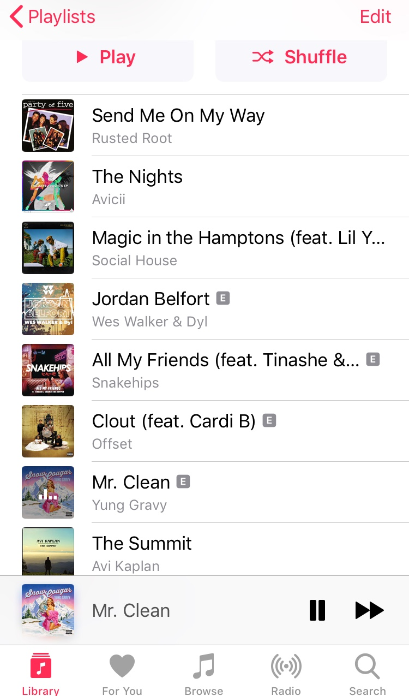

You know the zone you fall into when you’re walking or driving while listening to music? Isn’t it amazing how it drowns out all other noises and makes you feel so good? Music can completely change your mood and empower you to feel amazing about yourself. This customized summer playlist along with these other great music ideas are guaranteed to root positive vibes all summer long.
If you’re interested in having a fun, musical summer, read on!
Each song in this playlist is specifically chosen to get you excited, pumped, and shouting at the top of your lungs. It's ideal for road trips, parties, or just hanging out by the beach.

This song is used in so many movies as the sound track for road trips. It’s the best for singing in the car while racing down the countryside.
This is perfect for summer days out of the city! RIP Avicii you will never be forgotten!
One of my personal favourites. With a relaxing bass and beat, this song will constantly be on repeat.
This song was popular in summer ’18 and it's making a comeback!
A necessity for a night out with friends. It’s catchy with easy lyrics that everyone can remember.
A powerful couple coming to you with another hit!
A remix on classic Mr. Sandman by The Chordettes. Perfect for a day by the pool or the beach.
This former Pentatonix Bass has the most amazing and soothing voice! He’s mandatory in your summer playlist.
If you love festivals and dressing up, you’re in luck because there’s so many music festivals taking place in Ontario this summer! The music ranges in genre from jazz/rock to pop and rap! There's a festival for everyone!
Veld is a Toronto music festival taking place on Saturday August 3rd and Sunday August 4th. It features
so many famous artists such as Cardi B, Lil Baby, Ski Mask The Slump God, and so many more! So many of your
favourite rappers and singers will be there performing and joining in on the fun. So dress up, grab your friends,
and head over to Veld Music Festival to jam out to your favourite tunes!
Find more Summer Essentials!